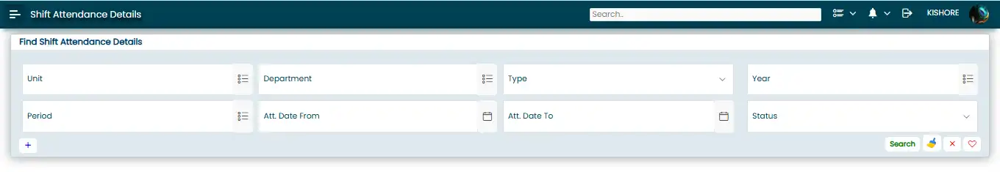
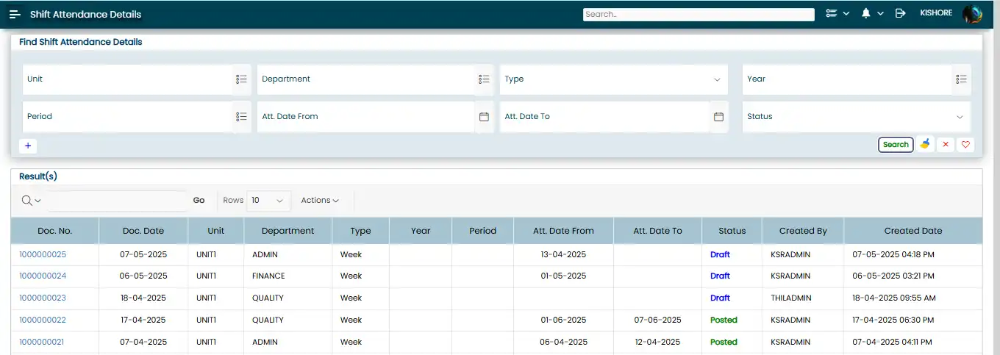

<div data-category="Payroll" data-title="Shift Attendance Details" data-updated="December 01, 2025" data-contributors="RoadmapIT" data-breadcrumb="Home,Payroll,Shift Attendance Details">
  <div class="page-content">
    <p>A breakdown of an employee's attendance information based on their assigned work shift, including details like clock-in and clock-out times, total hours worked during that shift, whether they were on time or late, and any potential overtime accrued. This allows accurate calculation of pay based on the employee’s specific work schedule.</p>
    <h5>Navigation path:</h5>
    <p class="fs-6">Payroll \ Transaction \ Attendance &amp; Leave \ Shift Attendance Details</p>
    <!-- Shift Attendance Details Search -->
    <h2>Shift Attendance Details:</h2>
    
    <ul style="list-style-type: none; align-content: center">
      <li class="mouse-icon">Search screen displays the list of shifts with the relevant details.</li>
      <li class="mouse-icon">Click Search to filter all the records.</li>
      
      <li class="mouse-icon">User can filter documents by entering search parameters in the header.</li>
      <li class="mouse-icon">Using search, system displays the results relevant to the entered parameters.</li>
      <li class="mouse-icon">On click, the corresponding transaction record will be displayed.</li>
      <li class="mouse-icon">
        Use
        
        to clear entered search parameters.
      </li>
      <li class="mouse-icon">
        Use
        <i class="bi bi-x fs-4 mx-2 text-danger"></i>
        to close the screen.
      </li>
      <li class="mouse-icon">
        By clicking the
        <i class="bi bi-plus fs-4 mx-2 text-primary"></i>
        Add button, user can create a new document.
      </li>
    </ul>
    <!-- Shift Attendance Entry -->
    <h2>Shift Attendance Entry:</h2>
    
    <ul style="list-style-type: none; align-content: center">
      <li class="mouse-icon">Select Unit and Department.</li>
      <li class="mouse-icon">Enter reference.</li>
      <li class="mouse-icon">Select type, year, and period.</li>
      <li class="mouse-icon">
        Click
        <i class="bi bi-check-lg fs-4 mx-1 text-success"></i>
        to save.
      </li>
      <li class="mouse-icon">
        Click
        <i class="bi bi-download fs-5 mx-1 text-muted"></i>
        to download the template.
      </li>
      <li class="mouse-icon">Enter the necessary details.</li>
      <li class="mouse-icon">
        Click
        <i class="bi bi-upload fs-5 mx-1 text-muted"></i>
        to upload the template.
      </li>
      <li class="mouse-icon">Enable the Check Exception checkbox.</li>
      <li class="mouse-icon">
        Click
        <i class="bi bi-check-lg fs-4 mx-1 text-success"></i>
        to save.
      </li>
    </ul>
  </div>
</div>